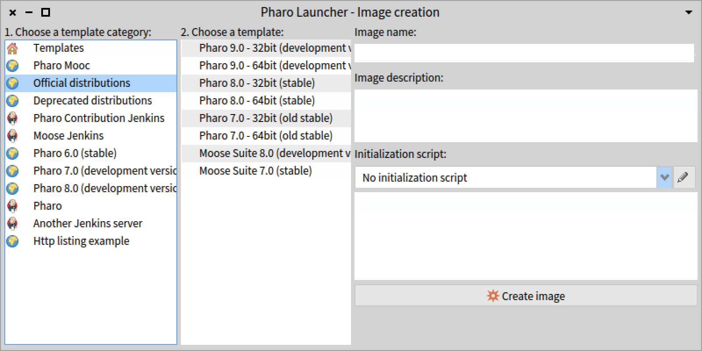
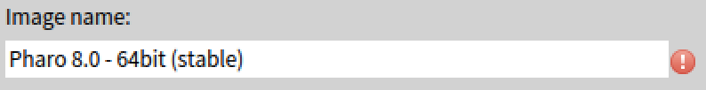
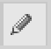
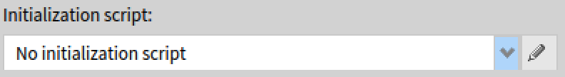
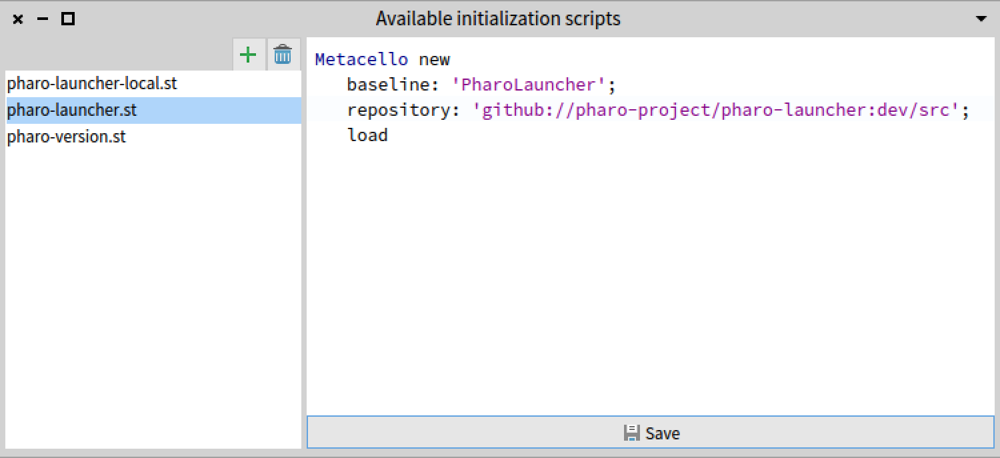
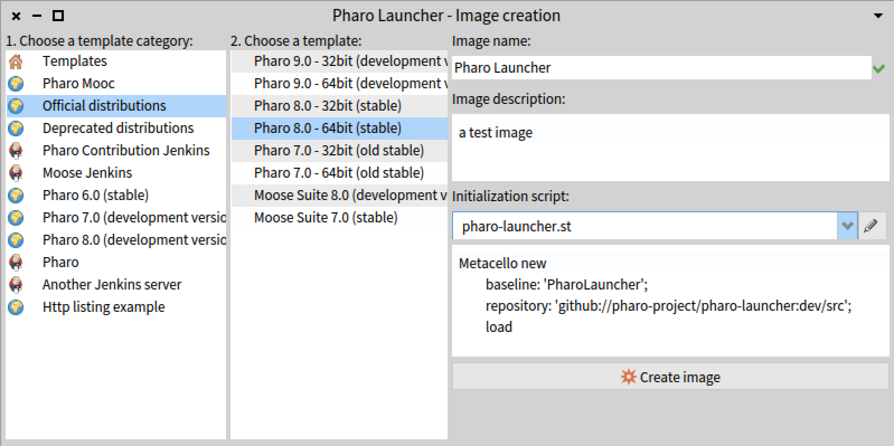
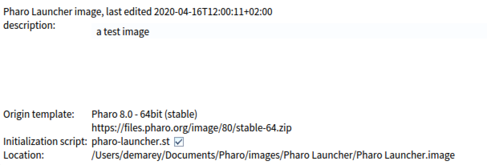

Create your first image
Click on the new button (left-most button in the toolbar).
It will open the image creation window.

In Pharo Launcher, images are created using a template. A template is just a zip file with the pharo image and its associated files (sources, changes). Pharo Launcher comes with an official list of templates containing core Pharo images but also other commonly used templates (Pharo MOOC, Moose, etc).
- First select the template category
Templates are sorted by category to improve searchability. The most popular category is Official distributions. It is the default selection. For more information, see the documentation on templates. - Select a template. By default, choose the current 64-bit stable Pharo image.
- Provide image information.
You now need to provide a name to your image. If the name is not valid, a red mark will appear just after the name text input.
You can optionally provide a description and an initialization script to your image. - Click on the Create image button.
Important note: the launcher currently does not fit with the "Save as" image style - since each launcher image has to be in a new directory. So either use the "Copy" image, then "Launch" and then only "Save" in the target image or copy the "Saved as" image in a new folder and refresh the Launcher view on the right side.
Which image to choose?
In Pharo, an image is the object space containing ALL the objects of the system: objects that are part of the Pharo runtime and development environment AND objects loaded / created by the user. By default, you should use the "current stable Pharo image". You should now prefer 64-bit images over 32-bit images. You can use Pharo development image if you want to contribute to Pharo or you can’t wait to discover / use new Pharo features. You can also use any other template coming with preloaded libraries / tools according to your needs.
Initially on a new computer the image list is empty. When creating a new image, you can see the image templates that are available on the web (there is also a local cache). Select the template image you want to use and download it. For instance you can download "Official distributions" -> "Pharo 8.0 (stable)" which is the latest stable image as of today. The launcher will download the image into a specific directory somewhere in your users home directory (you can configure where by clicking the Settings button). Each image gets its own folder. Use the "Show in folder" menu item if you want to open this location.
Where are my images stored?
Launcher files are considered as user documents and so, they are stored in the user document folder, i.e.:
- $HOME/Documents/Pharo on OS X,
- $HOME/My Documents/Pharo on windows,
- $HOME/Pharo on Linux (some Linux distributions provide a document folder but some others not, so we put it in the HOME directory in all cases).
In this folder, you will find your images and virtual machines needed to run images. The default location can be customized in Pharo Launcher settings.
Image initialization script
When working with Pharo, you often need to load your project code and its dependencies. You could also want to execute some actions once to configure your image. This is the purpose of the image initialization script: it is a Smalltalk script that will be executed at the first launch of the image and will then be disabled. When creating an image, you can select an already existing script or create a new one. For your conveniance, there is a script editor included in Pharo Launcher. Just click on the edit button

at the right of the initialization script dropbox.

Once the initialization script selected, you can have a preview of it just below the drop list:

Initialization script examples
Load a local project
gitFolder := FileLocator home / 'pharo-launcher'.
Metacello new
repository: 'gitlocal://', gitFolder fullName, '/src';
baseline: 'PharoLauncher';
load
Load a project hosted on github
Metacello new
baseline: 'PharoLauncher';
repository: 'github://pharo-project/pharo-launcher:master/src';
load
If you need to execute the initialization script again at image launch, select the image in the list of images and then click on the checkbox Initialization script. The script will be executed at next image launch and then disabled.
